Once Upon a Time of Chicken
An action and digital game for better animal welfare
Individual Work Tutor: Wim Schermer Tool: ReadyMaker Skill: Persuasive Gamification
My task: I conducted user review, concept design, and developed a standalone mobile game with ReadyMaker by myself.

Introduction
"Once Upon a Time of Chicken" is an interactive storytelling game based on an action of Dutch Animal Protection Organization "Wakker Dier". It utilizes persuasive gamification to nudge cognitive change serious social issue: Animal Welfare.
Brief
Meat consumption is climbing up these years due to growing population and people's food decision. What we should be concerned about is that higher meat consumption leads to intensed livestock industry, this brings misery to factory animals' life. Thus, we need to take actions to reduce meat consumption for better animal right.
Research
Q: What is public attitude towards animal welfare?
"I know that (cruel treating to animals), but I don't care about that.”
"Many environmentalist say that,but so what, we still need to eat meat, right?”
"It is truly far away from me.”
Insight
- Lack of Connectedness -
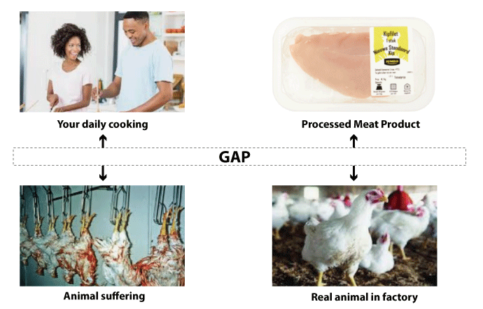
People find it hard to link factory animal life to their daily life and purchase. This is the reason why most people fail to take animal welfare into consideration when making food choice. Thus, bridging the gap between human and animal should be focused, in this project.
Design Goal
Nudge people to reflect on animal welfare
by connecting them with the animal behind the meat product.
Concept Generation
Solution Way
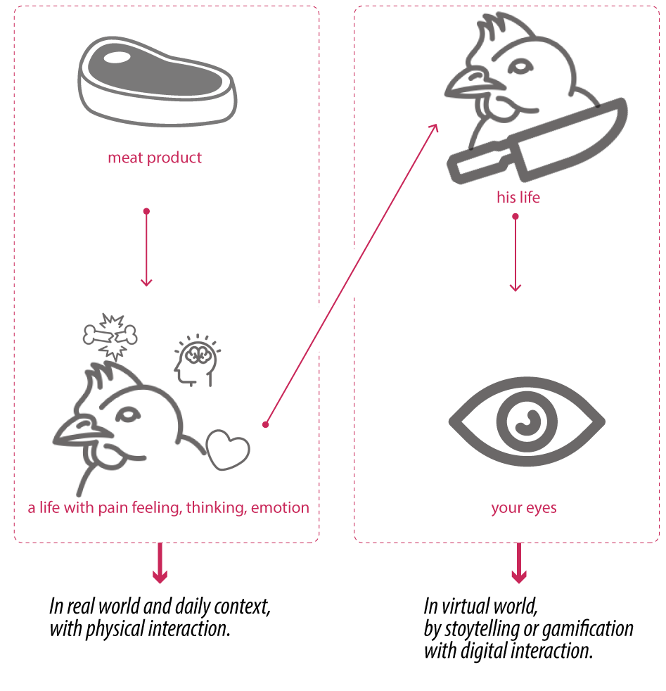
Design Opportunities: Food Package & Game

Concept Execution
Overall Interaction in Real World
The overall interaction in real world is about how to guide people from real world into virtual game world to interact with animals. In this part, an intuitive connection between real and virtual should be focused. So I decided to use food packages as a "virtual opening" to game world. Imagine the chicken meat stuck in this food package, it used to be a living chicken. What would happen if you get to know her ans experience her world?
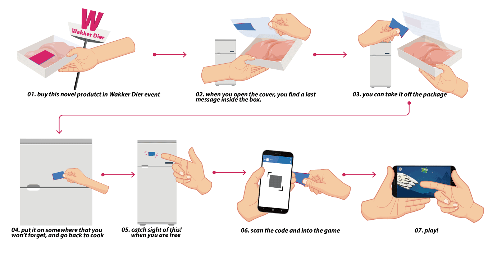
Storytelling
The whole story begins from the moment you buy the meat and see the food package. You can see the identity of the dead chicken and get her last message in the world. You need to help her to fulfil her last wish. Guided buy her, you enter her world, met her friends, witness her miserable life, and try your best to realize her wish. Finally, say good bye to this world and go back to real world.
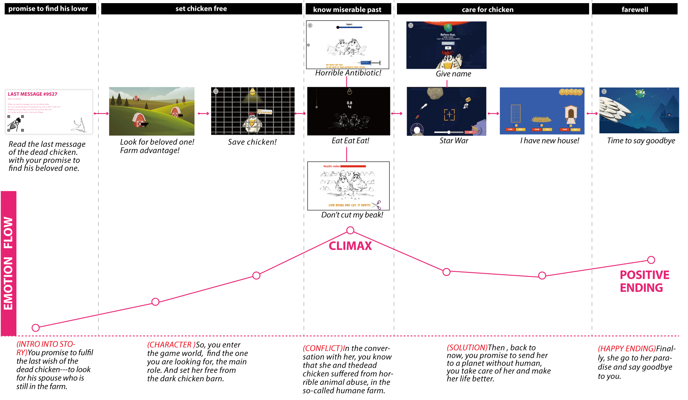
Storyline
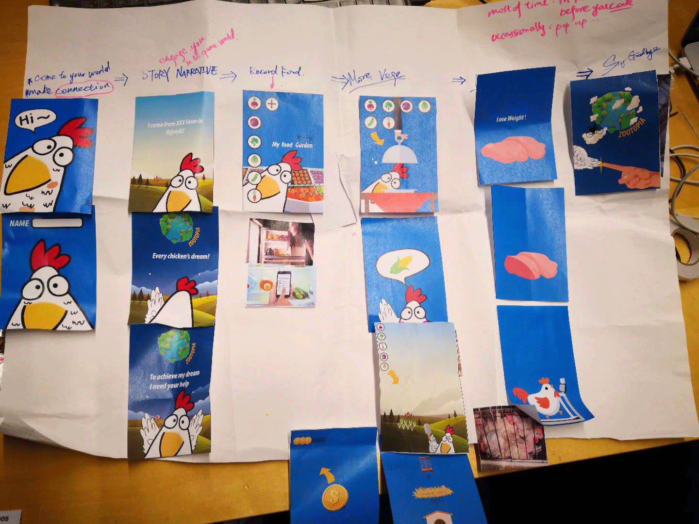
Process of developing story
Paper Prototype
Design Detail
Part#1: Food Package Design
Food Package is the cue which the game character leave in the real world, to guide player into game world. The lable of food package is focused. For the front side, the identity card of the dead chicken is shown, to prove the true exsitence of her. It is proof of her life. For the back side, it is the last message of her, about her unfulfilled wish.
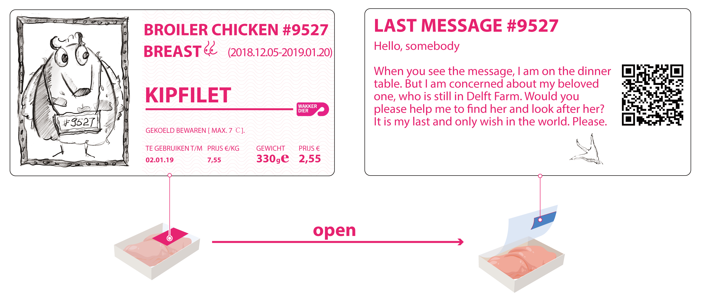
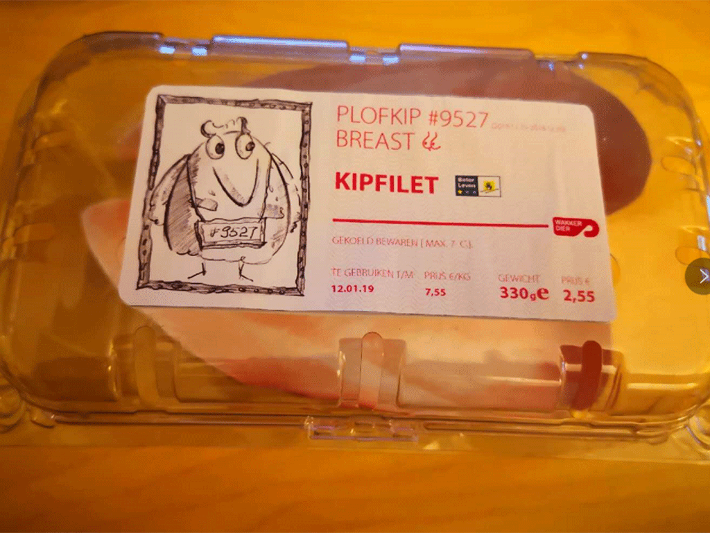
Prototype - food package
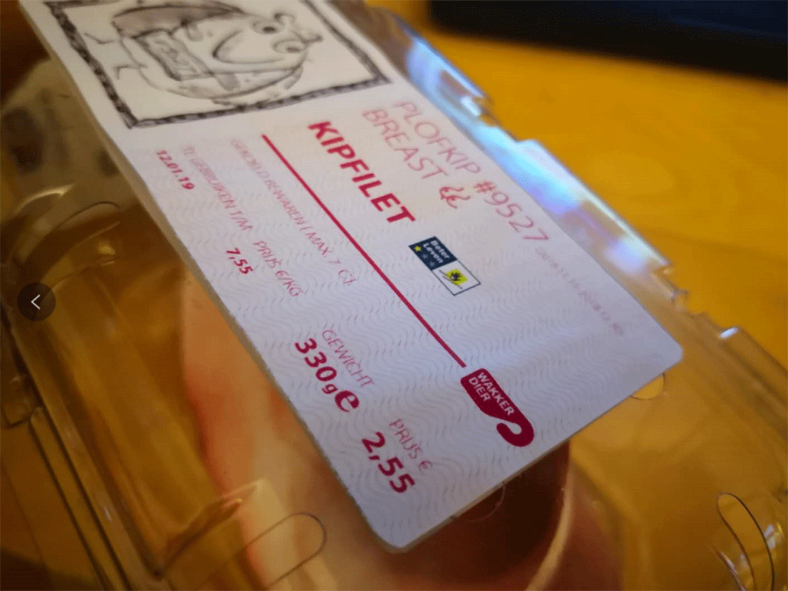
Before Opening
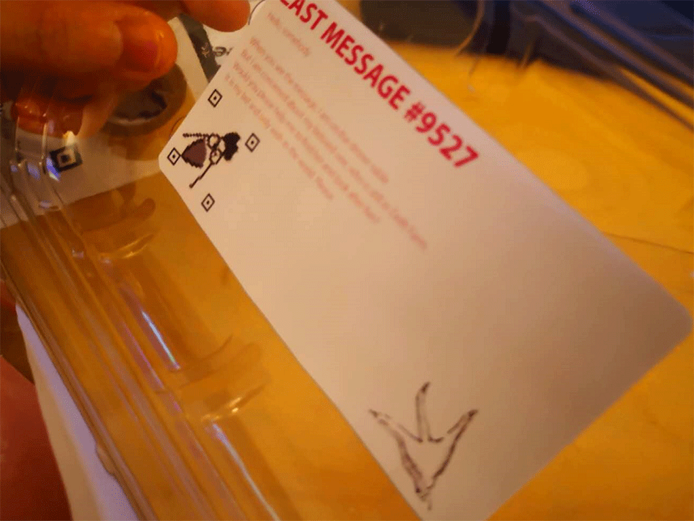
After Opening
Part#2: Digital Storytelling Game
use Digital Game to create bond between player and animal (game character).
Game Element

Game Demo
I use ReadyMaker to develop playable game prototype, while developing, I did test on players to discover usability prblems and optimize storytelling.
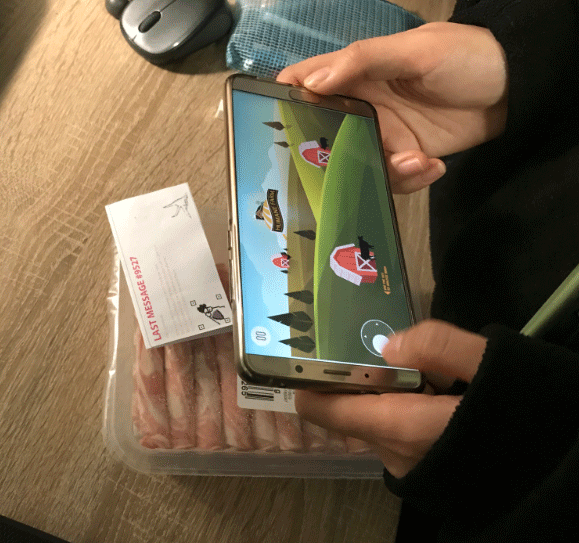
Player Test
Concept Context
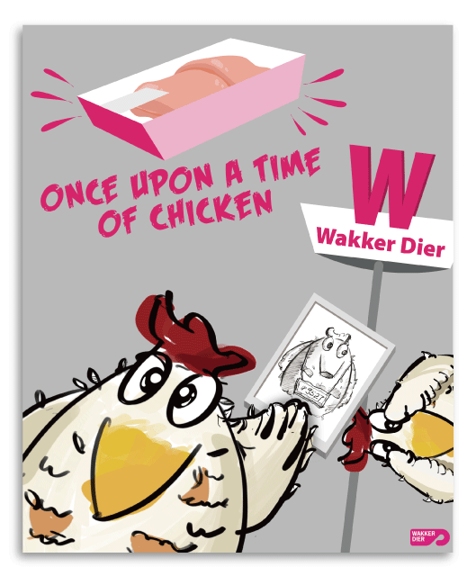
I collaborated with Wakker Dier, the environmentalism organization in Netherland, to launch this product in a pop-up event of selling cheap chicken meat. The price of the meat is as low as those in supermarket. However, the different point is that, people do not only get a stuck of meat, but also a story, and a friend (the chicken in the gameworld). In the game, you will know who is paying the price for the cheap meat: the suffering chicken.